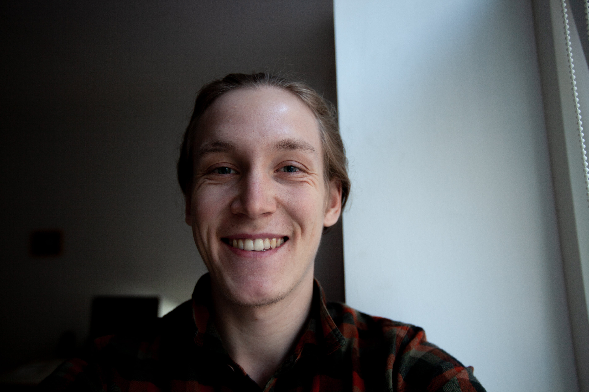
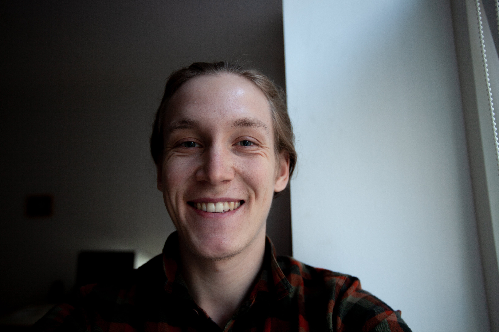

Home of Tom
Hello, my name is Tom Perneczky and I am 22 years old. I am living in Vienna studying Mathematics at Vienna University of Technology. I upload some of the results of my studies to YouTube. Feel free to check that out.
Hello, my name is Tom Perneczky and I am 22 years old. I am living in Vienna studying Mathematics at Vienna University of Technology. I upload some of the results of my studies to YouTube. Feel free to check that out.
